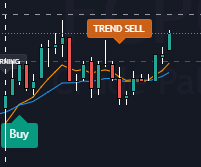

Visual Scalping Playbook (tf1M)
Dedicated breakdown of real-life IPO charts and order book dynamics to understand the Standard Operating Procedure perfectly.
Kenapa Timeframe 1-Minit (tf1M) Sangat Kritikal?
Hari pertama penyenaraian (Listing Day) IPO adalah medan perang yang bergerak sepantas kilat. Menggunakan timeframe besar seperti 5m, 15m, atau Harian adalah **kesilapan fatal** kerana corak kejatuhan atau lonjakan berlaku dalam tempoh beberapa minit terawal.
SOP Scalping mewajibkan kita memantau **Timeframe 1-Minit (tf1M)** untuk mengesan perubahan sentimen jualan besar-besaran (profit-taking) serta-merta bagi menyelamatkan modal. Klik pada mana-mana imej di bawah untuk **zum penuh (zoom full-screen)** bagi melihat butiran harga dan carta secara terperinci.
1. SkyeChip Berhad: The Minute 2 Plunge

Analisis Carta & Anatomi Junaman:
- Minit Pertama (Min 1): Harga dibuka tinggi dengan lonjakan yang kuat. Minit pertama sentiasa kelihatan bullish disebabkan pembelian panik (FOMO) retail dan padanan order awal. Lilin M1 mencipta garisan *support* (sokongan bawah) yang kuat.
- Minit Kedua (Min 2) - Titik Penentu: Perhatikan lilin merah besar pada Minit Ke-2. Tekanan jualan daripada pelabur awal (institusi, cornerstone, promoter, atau sindiket) mula dilepaskan.
- Support Breached: Sebaik sahaja harga pecah di bawah paras paling rendah Minit 1 (Lowest price of M1 candle), **SOP wajib diaktifkan**.
- Kejatuhan Seterusnya: Selepas support M1 pecah, harga SkyeChip terus melorot dari paras tinggi (melebihi 3.75) turun sehingga di bawah 2.50 tanpa sebarang cubaan naik semula.
- 📌 Nota Penting (Sama corak dengan Empire & Inspace): Keadaan yang sama berlaku kepada **Empire Sushi** dan **Inspace Creation**. Minit ke-2 adalah penentu. Jika support pecah, close position/cut loss mandatori!
2. Sunway Healthcare (SunMed): The New High Hold Condition

Analisis Carta & Ride Trend:
- Minit Pertama & Kedua: Berbeza dengan SkyeChip, SunMed memaparkan sokongan belian yang sangat agresif. Lilin Minit Kedua tidak pecah support Minit Pertama, malah terus bertahan.
- Konsistensi "New High": Carta memaparkan siri lilin hijau berterusan yang memecahkan harga tertinggi sebelumnya (previous high) secara berturut-turut. Setiap penarikan balik (pullback) adalah sangat cetek dan terkawal.
- Volume Confirmation: Lilin hijau kukuh (M1 & M2) menyokong kenaikan harga dari 1.70 hingga melepasi 1.88, menunjukkan jerung (institusi) sedang menyerap semua jualan runcit.
- Trailing Stop Action: Bagi kaunter sebegini, tiada keperluan untuk panik menjual. Anda boleh **hold dan trail stop** (menggerakkan paras profit-taking ke paras terendah lilin minit sebelumnya).
- 📌 Nota Penting (SunMed Blueprint): Hanya pegang saham IPO melebihi Minit Kedua sekiranya ia berterusan mencatatkan *Harga Tertinggi Baharu (New High)* dengan volume padu pada tf1M.
3. Listing Day Pre-Open Order Book: The 8:58 AM Queue Depth

Cara Menganalisis Order Book:
- Mengesan Hype Sebenar: Pada pukul 8:30 pagi hingga 8:55 pagi, queue price (Theoretical Opening Price - TOP) boleh dimanipulasi dengan meletakkan order beli yang besar dan membatalkannya di minit terakhir.
- The 8:58 AM Window: Ini adalah tempoh di mana padanan harga mula stabil dan pelabur besar tidak lagi boleh membatalkan order dengan sewenang-wenangnya.
- Bid vs Ask Depth: Gambar sebelah (Contoh SkyeChip) menunjukkan harga **Bid** yang kuat menyokong di bawah 4.400 dengan volume queue yang tinggi (7.985M), manakala **Ask** (penjual) bersedia pada paras **0.580**, **0.750**, dan **0.800**.
- Spread & Volume: Sentiasa bandingkan volume beli (Bids) terkumpul berbanding volume jual (Asks) terkumpul di sekeliling harga TOP. Jika volume Asks meningkat mendadak pada 8:59:30 pagi, ini menandakan aktiviti dumping (jualan panik) akan berlaku sebaik sahaja pasaran dibuka.
- 📌 Pro-Tip: Gunakan maklumat kedalaman order book ini di platform Moomoo anda beberapa minit sebelum listing bermula untuk merancang sama ada mahu menjual dengan **Limit Order** pada saat pembukaan, atau bersedia dengan **Market Order** jika jualan bermula agresif.
4. Empire Premium Food Bhd: The Minute 2 Support Break

Analisis Carta & Anatomi Junaman:
- Minit Pertama (Min 1): Lilin hijau padu melonjak naik dengan pantas sebaik sahaja loceng bermula. Namun, rintangan dibina di garisan kuning pada harga **1.18**.
- Minit Kedua (Min 2): Tekanan profit-taking yang sangat kuat bermula. Perhatikan lilin merah panjang pertama yang terus memecahkan harga pembukaan Minit 1 dan garisan sokongan 1.18 (ditandai dengan anak panah kuning).
- Immediate Plunge: Keengganan untuk cut loss pada Minit Kedua membawa akibat buruk. Pergerakan harga terus meluncur ke bawah dengan pantas dari **1.18** turun ke paras terendah **1.00** sebelum ditutup lemah di **1.06**.
- 📌 Nota Penting (Pengalaman Pengguna): Kaunter ini membuktikan "Minute 2 Rule" adalah mutlak. Sesiapa sahaja yang diperuntukkan (allocated) saham Empire Premium dan masuk sebaik sahaja pasaran dibuka akan mengalami kerugian teruk jika memegang saham melebihi Minit Kedua.
5. Inspace Creation Berhad: Break of Structure (BOS) & Support Failure

Analisis Carta & Break of Structure (BOS):
- Minit Pertama (Min 1): Inspace melonjak dan membina rintangan/sokongan awal pada paras harga **0.285** (ditunjuk oleh anak panah kuning di sebelah kiri).
- Break of Structure (BOS): Sebaik sahaja lilin merah Minit Ke-2 memecahkan paras **0.285** (ditandai dengan kotak biru dan label merah **BOS**), struktur kenaikan harga telah rosak secara rasmi.
- SOP Action: Sejajar dengan SOP, penembusan support bermakna **serta-merta close position / cut loss**. Menangguhkan jualan dengan harapan harga akan naik semula adalah kesilapan fatal.
- Hasil Struktur Rosak: Carta menunjukkan pasaran terus lesu di bawah paras BOS 0.285, tersekat di zon pengumpulan pasif tanpa sebarang lonjakan semula, dan ditutup rendah pada harga **0.265**.
- 📌 Nota Penting (Inspace Takeaway): Kegagalan mempertahankan paras sokongan lilin pertama bermaksud bekalan (supply) melebihi permintaan (demand). Lindungi modal dengan menutup kedudukan dengan segera.
6. Indicator Signals: SOP Entri (Buy) & Trend Sell

Cara Membaca Isyarat Sistem:
- Fasa Pengumpulan (Accumulation): Sistem menganalisis volume dan tindakan harga untuk mencari zon belian berisiko rendah. Tag Buy akan tertera apabila trend menaik bermula secara rasmi.
- Kekalkan Trend (Ride the Trend): Selagi harga berada di atas EMA / sokongan dinamik dan tiada isyarat jualan jitu dibentangkan, kedudukan harus dipegang (hold).
- Isyarat Jualan Dinamik: Tag TREND SELL dicetuskan apabila pasaran menunjukkan tanda-tanda keletihan (exhaustion) atau perubahan struktur trend. Ini adalah zon keluar terbaik sebelum kejatuhan bermula.
- 📌 Nota Penting (Strategi Disiplin): Menggabungkan isyarat tf1M (1-Minute) dengan isyarat sistem memberikan perlindungan tambahan terhadap kerugian besar (drawdown) pada listing day.
Faham SOP tf1M Dengan Jelas?
Sentiasa disiplinkan diri anda dengan SOP tf1M ini pada setiap Listing Day kaunter Grade B. Lindungi modal anda dahulu sebelum memikirkan keuntungan!